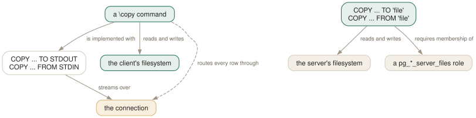

Day 09
Bulk data with \copy
One question decides which command you need: whose filesystem is the file on?
By the end of today you can
- choose between
\copyand SQLCOPYwithout thinking, from where the file lives - load a CSV and export a query result without leaving psql
- explain why
\copyis the only one of the two that never interpolates a variable
The backslash is the whole difference
COPY and \copy have nearly the same syntax and answer different questions. SQL COPY with a filename opens that file on the server, as the operating-system user the server runs as. \copy opens it on your machine, as you. Everything else about them follows.
So the privileges differ absolutely. Server-side COPY to or from a file needs superuser rights or membership of pg_write_server_files / pg_read_server_files. \copy needs nothing at all beyond the SQL privileges on the table, because the server is never asked to touch a file — psql runs COPY ... TO STDOUT or COPY ... FROM STDIN underneath and moves the bytes itself.
The database will tell you this itself, if you let it fail:
testdb=> COPY my_table TO '/tmp/x.csv' CSV;
ERROR: permission denied to COPY to a file
DETAIL: Only roles with privileges of the "pg_write_server_files" role may COPY to a file.
HINT: Anyone can COPY to stdout or from stdin. psql's \copy command also works for anyone.
That is an unusually generous error: the server names the role you lack and tells you which psql command sidesteps the problem.

\copy, which needs no privileges because it never asks the server to touch a file. The server's, and you want SQL COPY, which needs a role most people do not have. The amber box is the price of the left-hand route — every row crosses the connection, which is why the manual page steers large volumes to the right-hand one.The four shapes you will use
Everything after the source or destination is SQL COPY's own option list, so WITH (FORMAT csv, HEADER), DELIMITER, NULL, QUOTE, FORCE_QUOTE and the rest all work unchanged. Only the source and destination are psql's business.
-- export a query
\copy (SELECT * FROM my_table ORDER BY first) TO 'out.csv' WITH (FORMAT csv, HEADER)
-- load a file
\copy loaded FROM 'out.csv' WITH (FORMAT csv, HEADER)
-- filter as you load; the condition is evaluated server-side
\copy loaded FROM 'out.csv' WITH (FORMAT csv, HEADER) WHERE first > 2
-- through a program on YOUR machine
\copy (SELECT second FROM my_table) TO PROGRAM 'tr a-z A-Z'
And the shape that needs no file at all, which is how you embed data in a script. Data rows are read from whatever is feeding psql, up to a line containing only \.:
testdb=# \copy inline_load FROM stdin WITH (FORMAT csv)
1,alpha
2,beta
\.
COPY 2
Four destinations exist and the p prefix matters. stdin and stdout mean “the same place psql is currently reading from or writing to”, which respects a \o redirection or the script you are inside. pstdin and pstdout mean psql's real standard input and output, whatever the current redirection.
The one meta-command that ignores your variables
\copy parses unlike anything else in psql, and the manual page is explicit about why: the entire remainder of the line is taken as the argument, and neither variable interpolation nor backquote expansion is performed. So this does exactly what it says, and it is not what you meant:
testdb=# \set f '/tmp/data.csv'
testdb=# \copy my_table FROM :f WITH (FORMAT csv, HEADER)
:f: No such file or directory
psql looked for a file called :f. The exemption exists because \copy's arguments are mostly SQL destined for the server — where : has meanings of its own, in array slices and casts — and psql would rather pass them through untouched than guess.
The way round it is the SQL command plus a dispatcher, which is the manual page's own tip:
testdb=# \set out '/tmp/via_g.csv'
testdb=# COPY (SELECT * FROM my_table ORDER BY first) TO STDOUT WITH (FORMAT csv, HEADER)
testdb-# \g :out
COPY 4
That form has two further advantages. It can span multiple lines, because it is a query in the buffer rather than a meta-command argument that stops at the end of the line. And \g |program gives you the pipe as well. Day 10 is all about \g and \o.
When it goes wrong
A COPY is one statement, so a bad row aborts the whole load. The error tells you where, in the file and in the row:
testdb=# \copy badload FROM 'baddata.csv' WITH (FORMAT csv, HEADER)
ERROR: invalid input syntax for type integer: "notanint"
CONTEXT: COPY badload, line 3, column a: "notanint"
testdb=# SELECT count(*) FROM badload;
count
-------
0
Zero rows, not two. That is the right behaviour and it is worth verifying rather than assuming, because the loading pattern people reach for next — a loop that loads and retries — depends on knowing whether a partial load is possible. It is not, within one COPY.
Today's habit
Stop writing throwaway scripts to produce CSVs. \copy (query) TO 'file' WITH (FORMAT csv, HEADER) is one line, needs no privileges, and works against a database you only have SELECT on. Put it in your fingers and the next “can you send me that data” takes ten seconds.
Tomorrow: the rest of the output plumbing, and the difference between redirecting once and redirecting until further notice.
New vocabulary
Commands
| Command | Does |
|---|---|
\copy tbl FROM 'file' | Client-side load. psql reads the file, as you, with no server privileges. |
\copy (query) TO 'file' | Client-side export. A table name, or a query in parentheses. |
\copy tbl FROM PROGRAM 'cmd' | Run a command on the client and load its output. TO PROGRAM pipes out. |
\copy tbl FROM stdin | Data rows follow, up to a line containing only \.. |
\copy ... TO pstdout | psql's real stdout, ignoring \o. pstdin is the input twin. |
\copy ... FROM 'f' WHERE cond | Filter rows as they load — the condition is evaluated server-side. |
COPY ... TO STDOUT then \g f | The multi-line, interpolating alternative to \copy. |
Drillsdo these in a real terminal, today
Self-check
Answer out loud first, then unfold.
You run COPY orders TO '/tmp/orders.csv' CSV against a production server and it succeeds. The file is not in your /tmp. Where is it, and what would you have needed instead?
It is in the server's /tmp, written by the operating-system user the server runs as. SQL COPY with a filename is a server-side operation; the path is interpreted there and nowhere else.
\copy orders TO '/tmp/orders.csv' CSV is the client-side twin: psql opens the file, as you, on your machine, with your permissions. It is one backslash and it is the whole difference. That you had permission to do the server-side version at all means you are a superuser or a member of pg_write_server_files, which most people are not.
\set f 'data.csv' then \copy t FROM :f fails with “:f: No such file or directory”. Why is \copy different from every other meta-command, and what do you do instead?
Because \copy has to hand almost all of its arguments through to SQL COPY untouched, the manual page gives it special parsing: the entire remainder of the line is the argument, and neither variable interpolation nor backquote expansion is performed. The same exemption applies to \!, \ef, \ev, \help and the |command form of \g, \o and \w.
The route round it is the manual page's own tip: COPY t FROM STDIN — real SQL, which does interpolate — dispatched with \g :f. You also get multi-line layout, which \copy cannot have because its argument stops at the end of the line.
A colleague reports that \copy of a 40 GB table “took all night over the VPN” while a COPY on the server took eight minutes. Is that expected?
Entirely. \copy routes every row between the server and the client over the database connection — that is what makes it work without privileges, and it is also its cost. The manual page says so plainly: these operations “are not as efficient as the SQL COPY command with a file or program data source”, and “for large amounts of data the SQL command might be preferable”.
So the decision has two inputs, not one. Whose filesystem the file must be on decides which command is possible; the volume decides which is sensible. A nightly 40 GB extract belongs on the server; a 200 000-row CSV for a colleague belongs in \copy.
Inside a script you have \o results.txt in force. You want a \copy to go to the terminal anyway. Which destination, and what happens to the COPY n line?
pstdout — psql's real standard output, regardless of the current \o. Plain stdout means “wherever psql's query output is currently going”, which is the file.
The status line splits from the data, which is the point of the distinction. With TO stdout the COPY n count is suppressed altogether, precisely so it cannot be mistaken for a data row. With TO pstdout the data goes to the terminal and the COPY n goes to the query-output channel — the file.
Cheat sheet
Whose filesystem? Client → \copy. Server → COPY with a filename, and a privileged role.
\copy (SELECT ...) TO 'f' WITH (FORMAT csv, HEADER) -- export, no privileges needed
\copy t FROM 'f' WITH (FORMAT csv, HEADER) -- load
\copy t FROM 'f' WITH (FORMAT csv, HEADER) WHERE i>2 -- filter server-side as it loads
\copy t TO PROGRAM 'gzip > f.gz' -- program runs on the CLIENT
\copy t FROM stdin WITH (FORMAT csv) ... rows ... \. -- inline data in a script
stdin/stdout follow \o and the current script; pstdin/pstdout are psql's real ones
TO stdout suppresses the COPY n line; TO pstdout does not
-- \copy does NOT interpolate :vars or `backticks`. Instead:
COPY (SELECT ...) TO STDOUT WITH (FORMAT csv, HEADER)
\g :out
-- a bad row aborts the WHOLE copy: CONTEXT gives file line + column, 0 rows loaded
-- every row crosses the connection: for 40 GB, use server-side COPY instead
Everything through Day 09
Keys
| Key | Does |
|---|---|
| C-c | Abandon the line you are typing and empty the query buffer. |
| C-d | End the session — but only when the buffer is empty. |
| Tab | Complete a keyword or an object name. Twice for a menu, depending on the library. |
| UpC-p | The previous line from the history. |
| C-r | Reverse incremental search through the history. The one worth learning today. |
Commands
| Command | Does |
|---|---|
psql | Connect with the defaults and start an interactive session. |
; | Dispatch the buffer. Not a meta-command — SQL's own statement terminator. |
\g | Dispatch the buffer, exactly as a semicolon does. |
\p | Print the buffer without sending it. \print in full. |
\r | Reset: throw the buffer away. \reset in full. |
\e | Edit the buffer in $EDITOR; on exit it is re-parsed and run. |
\w file | Write the buffer to a file instead of sending it. |
\; | Append a semicolon to the buffer without dispatching it. |
\? | Every meta-command, in twelve groups. 121 of them in 18.6. |
\h SELECT | Syntax for one SQL command. \h alone lists what it knows. |
\q | Quit. |
\c dbname | Reconnect to another database, reusing host, port and user. |
\c - user | Reconnect as another user. A dash means “leave that one as it is”. |
\c -reuse-previous=on ... | Merge a conninfo string onto the current parameters. |
\conninfo | A twelve-row table describing the live connection. |
\password | Change a password without it reaching your history or the server log. |
\encoding | Show the client encoding, or set it. |
\d | Bare: tables, views, materialized views, sequences and foreign tables. |
\d my_table | Describe one relation: columns, types, nullability, defaults, indexes, constraints. |
\d+ my_table | Adds storage, compression, stats target and per-column comments. |
\dt | Tables. The letters combine — \dti lists tables and indexes. |
\di \dv \dm \ds \dE | Indexes, views, materialized views, sequences, foreign tables. |
\dn | Schemas. \dn+ adds permissions and comments. |
\l | Databases, with owner, encoding, locale provider and privileges. |
\dP | Partitioned tables and indexes; add n to include non-root ones. |
\dx | Installed extensions; \dx+ lists everything each one owns. |
\df pattern | Functions, with result type, argument types and kind. |
\df pattern t1 t2 | Extra arguments are type patterns, matched positionally. |
\sf name | The function's source as CREATE OR REPLACE. \sf+ numbers the body. |
\sv name | The same for a view. \ev and \ef edit rather than show. |
\du | Roles and their attributes. \dg is the same command. |
\drg | Role grants: who is a member of what, with ADMIN/INHERIT/SET. |
\dp | Access privileges on tables, views and sequences. \z is the same command. |
\ddp | Default privileges — what future objects will be created with. |
\dconfig | Server parameters set to non-default values. \dconfig * for all of them. |
\drds | Settings attached to a role, a database, or the pair. |
\dT \do \da | Types, operators and aggregates — same grammar, rarer questions. |
\pset | With no argument, print all 22 printing options and their current values. |
\x | Toggle expanded mode. \x auto is the setting worth keeping. |
\a \t \f \C \H | Shortcuts kept for compatibility: format, tuples_only, fieldsep, title, HTML. |
\set | With no argument, list every variable currently set, with its value. |
\set NAME value | Set a psql variable. Several values are concatenated. |
\unset NAME | Delete it — or, for a control variable, restore its default. |
\echo :NAME | Read a variable back. The cheapest debugging tool psql has. |
\i ~/.psqlrc | Re-read the startup file without restarting. Tilde expansion works. |
\e | Edit the buffer — or a file, or the last query — optionally at a line number. |
\ef name | Fetch a function's definition into your editor. \ev for a view. |
\s file | Print the command history, or write it to a file. |
\errverbose | Repeat the last error at maximum verbosity, changing no settings. |
\timing on | Report how long each statement took. Milliseconds, then m:ss past a second. |
\copy tbl FROM 'file' | Client-side load. psql reads the file, as you, with no server privileges. |
\copy (query) TO 'file' | Client-side export. A table name, or a query in parentheses. |
\copy tbl FROM PROGRAM 'cmd' | Run a command on the client and load its output. TO PROGRAM pipes out. |
\copy tbl FROM stdin | Data rows follow, up to a line containing only \.. |
\copy ... TO pstdout | psql's real stdout, ignoring \o. pstdin is the input twin. |
\copy ... FROM 'f' WHERE cond | Filter rows as they load — the condition is evaluated server-side. |
COPY ... TO STDOUT then \g f | The multi-line, interpolating alternative to \copy. |
Options
| Option | Does |
|---|---|
-h -p -U -d | Host, port, user, database. -d also takes a whole conninfo string. |
-w -W | Never prompt for a password / always prompt. Both persist across \c. |
-l | List databases and exit. Connects to postgres unless told otherwise. |
PGHOST PGPORT PGUSER PGDATABASE | libpq's defaults for the four parameters. |
PGPASSFILE | The password file. Default ~/.pgpass, and it must be mode 0600. |
PGSERVICEFILE | Named connection recipes. Default ~/.pg_service.conf. |
S | Include system objects: \dtS. Supplying any pattern does this too. |
+ | More columns — and a size lookup per relation, so it is not free. |
x | Expanded output for this listing only. Goes after S or +, never straight after \d. |
a n p t w | Function-kind filters for \df: aggregate, normal, procedure, trigger, window. |
format | aligned (default), wrapped, unaligned, csv, html, asciidoc, latex, troff-ms. |
expanded | on / off (default) / auto — vertical records, always or only when too wide. |
null | What to print for NULL. Default is nothing, which reads exactly like an empty string. |
border | 0 none, 1 dividing lines (default), 2 a full frame. |
linestyle | ascii (default) or unicode. Aligned and wrapped only. |
footer | The (n rows) line. off removes it. |
columns | Target width for wrapped, and the threshold for expanded auto. 0 means use $COLUMNS. |
pager | off / on (default, meaning “only when it does not fit”) / always. |
xheader_width | full (default) / column / page / an integer — how long the record rule may be. |
-X | Skip both startup files. Every script should pass this. |
PSQLRC | Where the personal startup file lives. Overrides ~/.psqlrc. |
PGSYSCONFDIR | Where the system-wide psqlrc is looked for. |
QUIET | Suppress psql's informational chatter. The startup file's bookends. |
VERSION_NAME SERVER_VERSION_NUM | psql's version and the server's, as a string and a number. |
HISTFILE | Where history is kept. Default ~/.psql_history. Must be set in psqlrc. |
HISTSIZE | How many commands to keep. Default 500; a negative value means no limit. |
HISTCONTROL | ignorespace / ignoredups / ignoreboth / none (default). |
COMP_KEYWORD_CASE | Casing for completed keywords. Default preserve-upper. |
PSQL_EDITOR EDITOR VISUAL | Checked in that order. vi if none of them is set. |
PSQL_EDITOR_LINENUMBER_ARG | How a line number is passed. Default +, which suits vi and emacs. |
AUTOCOMMIT | On by default: every statement commits itself unless you opened a block. |
ON_ERROR_ROLLBACK | off (default) / interactive / on — implicit per-statement savepoints. |
ON_ERROR_STOP | Stop at the first error instead of carrying on. Exit code 3 in a script. |
VERBOSITY | default / verbose / terse / sqlstate. |
SHOW_CONTEXT | never / errors (default) / always — the CONTEXT field. |
ERROR SQLSTATE ROW_COUNT | Set after every statement: did it fail, with what code, how many rows. |
LAST_ERROR_MESSAGE LAST_ERROR_SQLSTATE | The most recent failure, still there after later successes. |